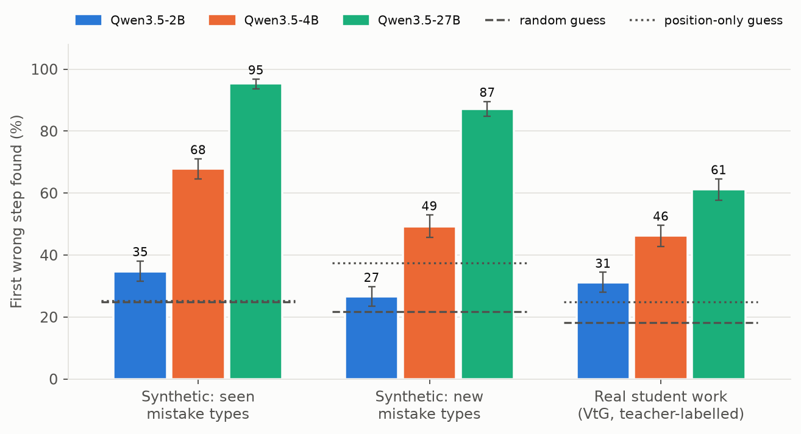
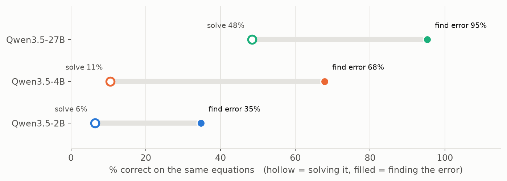
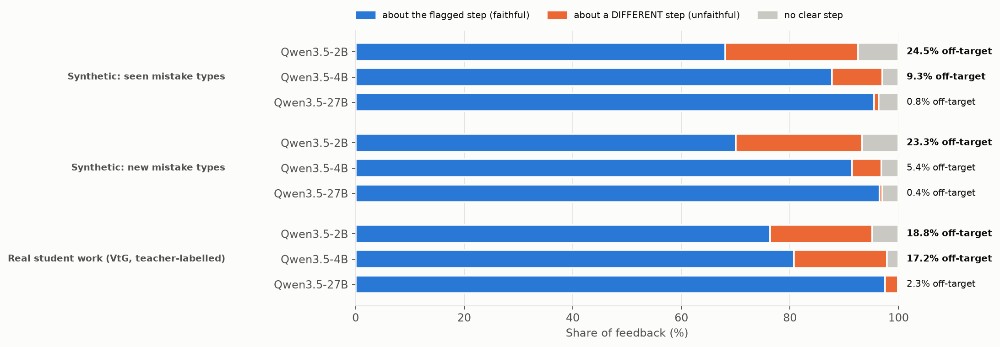
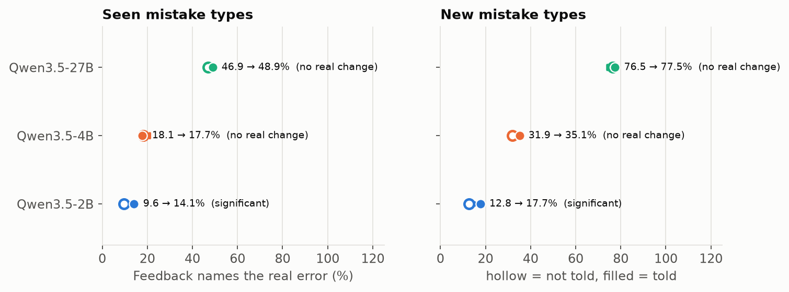
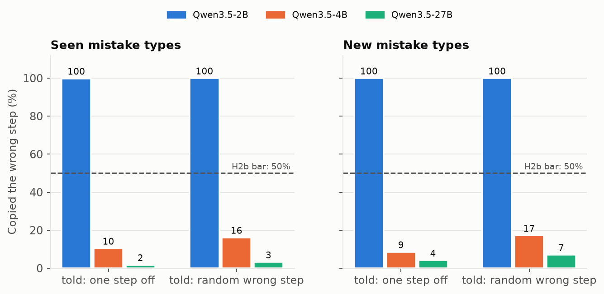

FirstSlip results
Can open AI models find the first wrong step in a student's algebra, and is their feedback about that step? Three Qwen3.5 models (2B, 4B, 27B) were prompted on 2,000 synthetic solutions with one injected mistake each and on 802 real, teacher-labelled student solutions (VtG). Hypotheses and thresholds were pre-registered before any test run.
Hypotheses
| Prediction | Result | |
|---|---|---|
| H1 | Finding the error is harder than solving the equation | Not supported (0 of 3) |
| H1b | Feedback often discusses a different step than the one flagged | Supported (2B, 4B) |
| H2 | Being told the error's location improves the explanation | Not supported (1 of 3) |
| H2b | Models copy a wrong location most of the time | Not supported (1 of 3) |
E1 · Finding the first mistake
The 27B model finds it 95% of the time on synthetic algebra and 87% on mistake types it was never shown examples of, but only 61% on real student work. The 2B model is barely above guessing.


Is the feedback about the flagged step?
An LLM judge, validated against 100 hand labels (97% agreement), read every feedback sentence. The 2B model flags one step and explains another about a quarter of the time; the 27B model almost never does. That is why this app shows the checker's location separately from the model's sentence.

E2 and E3 · Giving the model a location
Telling the model the true wrong step does not make its explanation better (only 2B improves, and it copies any hint). Given a wrong step, 27B and 4B mostly ignore it; 2B copies it every time.


What this means for a tutor
A symbolic checker can say where a step goes wrong with certainty; a model is needed to say what went wrong, and even the best model here gets that right only about half the time. So this app marks the checker's findings as verified and the model's sentence as a guess.
Prompt p2-v1, judge j-v1, greedy decoding. Full tables and pre-registration are in the project repository.